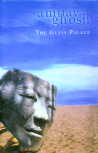
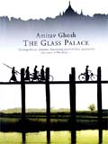

<!DOCTYPE HTML PUBLIC "-//W3C//DTD HTML 4.01 Transitional//EN" "http://www.w3.org/TR/html4/loose.dtd">
<html>
<head>
  <title>A palatial tome. Rukmini Bhaya Nair's review of the Glass Palace by Amitav Ghosh</title>
  <link rev="made" href="mailto:pm9k@virginia.edu">
  <meta name="generator" content="NoteTab Pro 4.81">
  <meta name="author" content="Philip McEldowney">
  <meta name="description" content="Biblio India New Delhi Burma A palatial tome. Rukmini Bhaya Nair's review of the Glass Palace by Amitav Ghosh">
  <meta name="keywords" content="A palatial tome. Rukmini Bhaya Nair's review of the Glass Palace by Amitav Ghosh">
</head>

<body bgcolor="#FFFFFF" text="#000000" link="#0000FF" vlink="#800080" alink="#FF0000">

<script language='javascript'>
<!--

function View( strImageName, iWidth, iHeight )
{
   iWindowWidth = iWidth + 45;
   iWindowHeight = iHeight + 95;
   ViewWindow = window.open( '', 'View', 'toolbar=no,location=no,status=no,scrollbars=no,resizable=yes,copyhistory=no,left=350,top=50,width=' + iWindowWidth + ',height=' + iWindowHeight );
   ViewWindow.document.open();
   ViewWindow.document.write( "<html><head>" );
   ViewWindow.document.write( "<title>Amitav Ghosh</title>" );
   ViewWindow.document.write( "</head><body background='' bgcolor='EBF2F4'>" );
   ViewWindow.document.write( "<center><table border=0 cellpadding=0 cellspacing=0><td></td></table><br>");
   ViewWindow.document.write( "<form><input type='button' value='Done' onClick='window.close()'></form>");
   ViewWindow.document.write( "</center>");
   ViewWindow.document.write( "<!--#include virtual="/includes/ssi_tracking.html"--></body><script async src="https://www.googletagmanager.com/gtag/js?id=UA-19937996-2"></script><script>window.dataLayer = window.dataLayer || [];function gtag(){dataLayer.push(arguments)};gtag('js', new Date());gtag('config', 'UA-19937996-2');</script></html>");
   ViewWindow.document.close();
}

// -->
</script>


<CENTER>
<TABLE width="92%">
  <TBODY>
  <TR>
    <TD><A name=top></A>
<P align=right>
<!--<a href="JAVASCRIPT:View('im/ghosh36.gif', 369, 524);">

<br>
Open</a> sketch of Amitav Ghosh. 
(and <A HREF="javascript:closeIt()">
close it</a>).-->

      <A
      href="http://www.lib.virginia.edu/area-studies/SouthAsia/SAserials/Biblio/xbib2000.html#ghosh"><B>Biblio:</B></A>
      July-August 2000, p. 4-6
      <CENTER>--: FICTION :--
      <P><FONT size=+3><B>A palatial tome</B></FONT><BR><FONT size=+1><B>The Glass Palace
      <P>By Amitav Ghosh</B></FONT>
      <P>Ravi Dayal & Permanent Black, New Delhi, 2000, 551  pp., Rs 425<BR>ISBN
      81-7530-0310
      <P>Reviewed by <FONT size=+1><B>Rukmini Bhaya Nair</B></FONT></CENTER>
      <HR>

      <P>
      <TABLE align=center border=0 cellPadding=5 cellSpacing=2>
        <TBODY>
        <TR>
          <TD valign=top width="65%"><FONT size=+3
            valign="bottom"><B>T</B></FONT>he existential angst of modernist fiction is replaced in the postcolonial novel by a phenomenon one might call 'exit-ential anxiety'. Diaspora here takes the place of doubt and homelessness becomes the principle trope, typifying a historical condition as well a state of mind. When Rushdie's narrator in <i>The Ground Beneath her Feet</i> dubs himself a 'photographer of exits' it is exactly this paradox to which he refers--of having to capture individuals and populations at the very moment that they are about move out of a frame.

<p>Colonialism had movement built into its definition: troops on the
march, drastic changes in administration, large-scale transfers of goods
and reconfigurations of political boundaries. Any writer who seeks to
present the soul of man under colonialism, as Amitav Ghosh does in his
latest novel, is therefore condemned to record the existential
dilemma--wherein the subject is necessarily partitioned, a bewildered
immigrant never quite in focus nor contained within the frame.

</TD>
          <TD bgcolor="#000cc" width="35%" valign=top>
            <CENTER><FONT color="#99ccff" size=+1>*&nbsp;*&nbsp;*<br>
It strikes me that many Ph.D. thesis are not half as
diligently worked out as Ghosh's book, and the
scholarship in them displayed to far less advantage
than in <i>The Glass Palace</i>. The truth is that the
contemporary novel--and Ghosh's talent--have both
matured to a stage where they can absorb a very rich
diet of historical detail without necessarily running
the risk of a bilious reader<br>
*&nbsp;*&nbsp;*</FONT></CENTER></TR></TBODY></TABLE>


<p>Ghosh's cast literally includes kings (Thebaw, Queen Supalayat, the
Burmese princesses) and commoners (Dolly, Rajkumar, Saya John, Uma) but
what unites them all is the inescapable narrative of colonial
displacement. Buffeted about by the gale-winds of history, these
protagonists are driven from Burma to India, Malaya, Singapore and back
again, repeating each time a pattern of action that Ghosh presents in
his first few pages:

<p><blockquote>"English soldiers were marching towards the city. Panic
struck the market. People began to run and jostle. Rajkumar managed to
push his way through the crowd... He could not see far: a cloud of dust
hung over the road, drummed up by thousands of racing feet... Rajkumar
was swept along in the direction of the river. As he ran, he became
aware of a ripple in the ground beneath him, a kind of drumbeat in the
earth, a rhythmic tremor that travelled up his spine through the soles
of his feet. The people in front of him scattered and parted ...Suddenly
he was in the front rank of the crowd, looking directly at two English
soldiers mounted on horses."</blockquote>

<p>If any single motif 'frames' the colonial picture, it is the presence
of the "English soldiers" who bookend this particular passage. That
these soldiers turn out more often that not to be Indian sepoys--and
sometimes even Indian officers--compounds the confusing effect. Which
are the invading forces, whose the commanding vision here?

<p>As Ghosh tells us, "a cloud of dust" tends to hang over the colonial
scenario. Whole cities are on the run and it is often impossible to "see
far", given the panicky conditions. Under the circumstances, then, it is
not surprising that Ghosh also uses, <i>&agrave; la</i> Rushdie, the
metaphor of the camera to slow events down to a pace where it is
actually possible to focus. The 'glass palace' of his title, it turns
out, indicates both the magnificent hall of mirrors which forms the
centre-piece of the Mandalay residence of Burmese kings <i>and</i> the
name of a "small photo studio" where the book's action appropriately
ends.

<p><blockquote>"'But you have an address for him, then?' Jaya said.
'Yes' Ilongo reached into his pocket and drew out a sheet of paper. 'He
has a small-photo-studio. Does portraits, wedding-pictures, group
photographs. That sort of thing. The address is for his studio: he lives
right above it'. He held the paper out to her and she took it. The sheet
was smudged and crumpled. She peered at it closely, deciphering the
letter. The first words that met her eyes were: '<i><i>The Glass
Palace</i> Studio</i>'."</blockquote>

<a href="http://www.vedamsbooks.com/no17582.htm" target="_blank"> </a>

<a href="http://www.amazon.com/exec/obidos/ASIN/8175300310/" target="_blank"> 
</a>

<p>Fiction, at its best, provides us with 'addresses' for the lost
actors in the historical chronicle. By dwelling on small details and
bestowing on ordinary lives an attention that the historian's stricter
annals cannot afford, a writer creates an <i>interior history</i>. Such
an internalised record of emotions runs parallel to explicit factual
accounts and fills them out. At this elusive juncture, so to speak,
story meets history and makes it a little more comprehensible. A genre
like the novel, especially, is suited to the task of bringing content
back to those empty frames from which the colonial subject is always
vanishing.

<p>Like Ilongo, a novelist 'reaches into his pockets' and 'holds out'
his 'smudged and crumpled sheet of paper' so that the reader can
'decipher' it in a manner that combines fact with affect, photographic
accuracy with the uncertainties of memory. That is why

I cannot think of a clutch of sentences which better describe Ghosh's
own labours in this massive 547-page book than these: "<i>He has a
small-photo-studio. Does wedding-pictures, group photographs. That sort
of thing.</i>" It would be quite accurate to say that wedding and group
portraits form the bulk of the matter in <i>The Glass Palace</i>.
Ghosh's technique is simply to borrow the war-journalist's tripod,
lenses and so forth, and then swivel his viewfinder so that it alights
on families living out heir lives in tumultuous times.

<p>A noticeable feature of the family portraits in <i>The Glass
Palace</i> is that

they begin with the pivotal figure of Rajkumar, a young orphan of
eleven. To my mind, Rajkumar's orphanhood implies that he has to
<i>create</i> a family where none exists; he has to build lasting bonds
of trust with strangers. Structurally, that is, the <i>un</i>folding of
this novel is associated with the <i>en</i>folding of family and friends
around the central character.

<p>Were one foolhardy enough to attempt a 175-word summary of <i>The
Glass Palace</i>--I couldn't manage it in less--it might go like this:
Skilled in the art of survival in a difficult world, Rajkumar gradually
succeeds in becoming, with the loyal help of his friends Doh Say, Saya
John and others, a rich and respected member of the Indian community in
Burma. Thereafter, he tracks down Dolly, devoted maid of Queen
Supalayat, with whom he had fallen in love at first sight as a boy
during the British takeover of

Mandalay. Dolly now lives in the distant Indian city of Ratanagiri,
where she has made a lifelong friend of Uma, the unruly wife of the
Indian District Commissioner assigned to 'look after' King Thebaw and
his family. Through Uma's good offices, Rajkumar finally gets to marry
Dolly. All this happens by the end of Chapter Sixteen. The rest of the
48 chapters of <i>The Glass Palace</i> concern, during a period of
history both harrowing and exciting, the interaction between three
families: of Dolly and Rajkumar in Burma, of Uma and her brother in
India and of Saya John--Rajkumar's mentor--and his son Matthew in
Malaysia.

<p>When we first meet Rajkumar he has a temporary job at Ma Cho's tea
shop in Mandalay but just how temporary this position is depends on
players much bigger than him: "The invasion proceeded so smoothly as to
surprise even its planners. The imperial fleet crossed the border on 14
November, 1885... A few days later, without informing King Thebaw, the
Burmese army surrendered. The war lasted just fourteen days." In Ghosh's
novel, the repercussions of this 'fourteen day war' are tracked for over
a century, for the book ends with a snapshot of Aung San Suu Kyi in
1996, the sixth year of her house arrest under the generals.

<p><blockquote>"Suddenly, there was a great uproar. 'There she is' Dinu
said... A slim, fine-featured woman stepped up. Her head was just
visible above the gate... She was wearing white flowers above her hair.
She was beautiful almost beyond belief."</blockquote>

<p>Now, 'beautiful' is an unexpected adjective in a modern novel; it has
about it an air of anachronistic innocence. In a cynical world of
makeovers and nose-jobs, it seems somehow to require unbearable courage
to use this term unself-consciously, but Ghosh manages to do so without
flinching. Dolly, too, is "of a loveliness beyond imagining." I cannot
help but find it intriguing that the concept of 'beauty' occurs in
conjunction with the phrases 'beyond belief' and 'beyond imagination' in
Ghosh's text. What, I ask myself, is the symbolic value of this striking
valorisation, almost <i>Ivanhoe</i>-ish, of feminine pulchritude in
Ghosh's text? And again the answer has to do, I think, with tackling
history within the boundaries of contemporary fiction.

<p>Walter Scott's classic was based on a popular understanding of
Europe's crusades and involved the most minimal investigation of
original sources. Not so Ghosh's novel, which is very much in keeping
with both the postcolonial spirit of today as well as his own
anthropological training. <i>The Glass Palace</i> is a formidably
researched presentation of one of the lesser known theatres of World War
lI, yet no less horrific than Dunkirk or Stalingrad. As Ghosh puts it
himself in his 'Author's Notes': "I read hundreds of books, memoirs,
travelogues, gazetteers, articles and notebooks, published and
unpublished; I travelled thousands of miles, visiting and revisiting, so
far as possible, all the settings and locations that figure in this
novel; [and] I sought out scores of people in India, Malaysia, Myanmar
and Thailand." It strikes me that many Ph.D. thesis are not half as
diligently worked out as Ghosh's book, and the scholarship in them
[<b>++Page 5</b>] displayed to far less advantage than in <i>The Glass
Palace</i>.

<p>The truth is that the contemporary novel--and Ghosh's talent--have
both matured to a stage where they can absorb a rich diet of historical
detail without necessarily running the risk of a bilious reader.
However, some concession must be made to the free spirit of fiction even
in a work as laden with the knowledge of history as Ghosh's. Sometimes
authors achieve this through exuberant wordplay or fantasy--one need
hardly mention Marquez or Rushdie's 'magic' approach to 'real' history.
But Ghosh cannot be accused of stylistic excess or of pandering to a
sheer love of language; he is one of the few authors I know who does not
balk at using words like 'governance' in a novel!

<p>Writers such as Ghosh have to seek some route other than the magic
realist to the realms 'beyond belief' that every work of art
subliminally demands. <i>The Glass Palace</i> deals with this literary
compulsion, I suggest, by incorporating three 'ideal types' within its
text, which counterbalance and redeem those brute facts of history that
Ghosh is clearly committed to depicting in relentless detail. These are,
very simply--the image of perfect but very human beauty in the figures
of Dolly and Suu Kyi; the theme of new diasporic beginnings after great
upheavals such as the one symbolised by the Burmese Royal family's
resettlement in Ratnagiri in India or Saya John's son Matthew's creation
of the wondrous 'Morningstar' plantation in faraway Malaysia; and
finally, the enchantment of criss-crossing coincidences throughout the
novel.

<p>Beauty, coincidence and diasporic hope: the three redemptive graces
in <i>The Glass Palace</i>. I have mentioned the first and last of these
already, so it may now be time to move on to coincidence. The
psychologist Carl Jung once called coincidence "the joker in nature's
pack of cards" and one sees his point immediately. As he indicated,
coincidences were "synchronous events" which broke the rules of causal
determination and invited analysts to probe beyond the certainties of
everyday reality. Extending these views of Jung's to Ghosh's novel, one
could argue that coincidence represents what post-modernists would call
an <i>aporia</i> or 'break' in the logic of narration.

<p>Coincidence, in effect, allows for something like 'fate' or 'the hand
of god' to slip into an otherwise down-to-earth historical exposition.
Now <i>The Glass Palace</i> is not just a thoroughly researched novel,
it is a carefully plotted one. This means that Ghosh goes out of his way
to tie up loose ends. <i>Stylistically</i>, he is always measured,
correct, objective--in the manner of the historian--but
<i>managerially</i> he isn't altogether able to resist the temptation to
play God--in mode of the novelist. By the time Ghosh reaches the middle
of his novel, he has three generations and several families strewn
across half the world and must meet the obligation to establish
connections between them. He must get his 'group photographs'.
Accordingly, Ghosh makes Neel, the elder son of Dolly and Rajkumar
appear as if by magic in a Calcutta film-studio all the way from Burma
at the exact moment when Manju. the daughter of Uma's brother, is caught

in an embarrassing situation. Naturally, Neel rescues Manju and they
fall conveniently in love. First coincidence: uniting the families of
Dolly and Uma by marriage.

<p>Another time, Manju's twin brother's army unit is stationed in the
precise location in Malaysia that abuts the Morningside estate, thus
encountering Saya John's niece Alison and Rajkumar's son Dinu in one
unlikely stroke. Second coincidence: bringing one member from each of
Ghosh's triad of families together. Still later, having painfully given
up his allegiance to the British Army and having crossed over to the
Indian National Army, the emaciated and almost broken Arjun finds
himself face-to-face once again with Dinu, because Dinu just happens to
have been asked to intercede with the INA

"because of his Indian connections". It stretches one's credulity to
believe that of all the exhausted soldiers of the INA, the one emerging
from the jungle is Arjun and the one confronting him is his old rival in
love and war, Dinu. But there you have it: coincidence, an unexpected
regular in <i>The Glass Palace</i>. Coincidence, the irresistible old
trickster of fiction, shamelessly asking for a willing suspension of
disbelief from the reader--and getting it!

<p><table width="100%"><tr><td valign=top width="85%" cellSpacing=10>

Only the most skilled of historical novelists can so endear his
characters to his audience that they are prepared to 'forget history'
from time to time

and allow the internal dynamics of the text to dominate events. I made
the point earlier that a writer's task is to memorialise psychological
space, to correlate invisible inner events with outer experience.
Ghosh's <i>The Glass Palace</i> rises to this challenge with zest and
self-confidence. Despite the fact that the novel is unapologetically
packed with one hundred years of dates and facts, Ghosh's triumph is
that time seldom hangs heavy in the fictional space he has designed for
it; and, on several occasions, the illusion of restoring an imaginative
wholeness to the divided self of colonialism is very successfully
maintained via an appeal to luminous concepts like beauty and hope.

</td>
<td valign=top width="15%"><center>
<a href="JAVASCRIPT:View('im/ghosh36.gif', 369, 524);">

<br>
Open</a> sketch of Amitav Ghosh. 
<!--(and <A HREF="javascript:closeIt()">
close it</a>).--></center></td></tr></table>

<p>In many ways, what is interesting about this millennial novel is how
traditional it is in its teleology. Family

sagas with a sweeping historical backdrop were always a failsafe item in
the publishing world--from <i>The Forsythe Saga</i> to <i>Gone with the
Wind</i>. The only radical change to have come about in the past decade
or two is that 'the orient' is now increasingly represented not so much
by a Paul Scott or a Pearl S. Buck as by best-selling writers like Jung
Chang or Vikram Seth speaking in their 'own' voices. So where have all
Scotts and Bucks gone, long time passing? My own hypothesis is that they
comprise the new literary migrants who have moved to a principality
adjoining the historical novel--namely, travel

writing. Witness the regions now tenanted by Paul Theroux or William
Dalrymple.

<p>This is because travel-writing is <i>logically</i> the province of
the 'outsider' and there is thus a certain legitimacy that a writer can
claim when he traipses off to, say, Ladakh or Somalia and records his
own (mis-)adventures there. In contrast, considerably less sympathy
exists, in today's politically correct climate, for the fiction writer
who 'appropriates' the perspective of the 'Third-worlder'. Concurrently,
new areas of literary discourse like 'postcolonial studies' have
ensured, for better or worse, that a certain modicum of world attention
is directed towards formations such as the ubiquitous 'Indian Writers in
English'.

<p>And what has this to do with Ghosh? Well, my contention would be that
a writer like Ghosh, who lives in 'the West' but writes about
'elsewhere' is almost forced today to occupy an inter-generic cusp:
between travel writing, autobiography, informed journalism and fiction.
Both Ghosh's <i>In an Antique Land</i> (part fiction; part sociological
take on Egypt) and <i>Dancing in Cambodia, At Large in Burma</i>
(travelogue) illustrate this argument perfectly. So does his
<i>Countdown</i>, on India's 'bomb' (informed journalism). Other Indian
writers in English subject to the same urge and a similar geographical
situation include both Vikram Seth (<i>From Heaven Lake</i>) and Salman
Rushdie (<i>The Jaguar Smile</i>).

<p>The postcolonial critic Gayatri Chakravarti Spivak has argued in her
provocatively named book <i>Outside in the Teaching Machine</i> that the
significance of this East-West placement is, as of now, primarily
strategic. In this position, an Indian writer in English mimics the
partitioned subject of imperialism once more--both inside and outside
the neo-colonial 'machine'--but this time round he holds textual power.
He possesses the means to draw attention to the claims of civil society
the world over. Ghosh's <i>The Glass Palace</i> furnishes us throughout
with examples of such a 'contestatory' politics of the
novel-as-colonial-autobiography/travelogue/fiction. Here's a
conversational instance:

<p><blockquote>"One night, plucking up her courage, Uma remarked: 'One
hears some awful things about Queen Supalayat'. 'What?' 'That she had a
lot of people killed...in Mandalay'...Dolly was quiet for a moment and
Uma began to worry that she had offended her. Then Dolly spoke up. 'You
know, Uma,' she said in her softest voice. 'Every time I come to your
house, I notice that picture you have hanging by your front door...' 'Of
Queen Victoria, you mean?' 'Yes.' Uma was puzzled. 'What about it?'
'Don't you sometimes wonder how many people have been killed in Queen
Victoria's name? It must be millions 1wouldn't you say? I think I'd be
frightened to live with one of those pictures.' A few days later Uma put
'the picture down and sent it to the Cutchery, to be hung in the
Collector's office." </blockquote>

<p>Two queens, same difference, but Ghosh leaves us with no doubts about
how the representational dice (pictures, literature) is loaded Uma's

[<b>++Page 6</b>]

gesture at the end of this passage is as much about political resistance
as any tract about colonial hegemony, and I would count this a major
strength. Spivak would probably say that Ghosh had used his 'strategic'
placement to advantage here. Without being heavy-handed about the
matter, he has demonstrated with elan how prejudicially the norms of
'civilized behaviour' apply under certain historical conditions. Dolly's
much remarked upon 'beauty' is not just physical at this instant; it is
a symbol of moral and intellectual insight. Indeed it is on account of
textual moments like these that one is able to forgive Ghosh his
occasional <i>faux pas</i>.

<p>I will mention only one of these 'slips' here, both because I think
it is telling and because Ghosh might want to correct it in the next
edition of his book. The error--at least I <i>think</i> it is--marks a
climactic moment during the wedding of Rajkumar and Dolly on page 169.
"At the end of the civil ceremony, Uma and Rajkumar garlanded each
other, smiling like children." Am I alone in thinking that it is
exceedingly odd for <i>Uma</i> and Rajkumar to be the people garlanding
each other at <i>Dolly</i> and Rajkumar's wedding, given the cultural
significance of garlands (<i>mala-badal</i>) in the Indian context? But
even more fascinating is the Freudian glimpse this slip provides into
how the authorial mind anticipates itself, given the surprise ending of
Ghosh's book, when the old war-dogs Uma and Rajkumar...ah well, one must
read this slightly bizarre Ghosh finale for oneself. I did say <i>The
Glass Palace</i> was a well-plotted novel, perhaps a little too well, in
this case!

<p>"Hell is other people", declared Jean Paul Satre, and there are those
who suspect that his targets in this grimly existential remark were
mainly literary critics and other philosophers. So perhaps it is time
for me to exit, before I produce a nitpicking review nearly as lengthy
as my object of enquiry, and considerably more tedious! Yet it remains
to be said that, for the exit-ential writer of immigrant literature,
hell is differently defined.

<p>Post-coloniality's hell usually consists in the <i>absence</i> of
others--those lives erased by wars or missed out in the 'grand
narratives' of history. Therefore, one may presume that even a critic's
tendencious as well as tedious!--remarks are welcomed by a postcolonial
writer since they show that his discourse has visibly grown, commanding
more print space, psychic space, political space.  Ghosh is a wordy
writer, seldom a scintillating one; his novelistic pace is set at a
sedate amble rather than an exciting sprint. His new novel is, likewise,
important not because it opens new stylistic or thematic doors, but
because it reopens old ones so effectively.  Burma at the present time
is near inaccessible territory; but <i>The Glass Palace</i> holds up
before a global community of readers a historically authentic 'golden'
Burma as it was-- and could be again. That is its virtue--elephants,
teak, pagodas and all. One may not quite want to go shikoing backwards
out of Ghosh's literary presence as the Burmese were required to do with
royalty, but one is definitely inclined to accord him a subaltern salute
for the stately achievement of this novel. Always against the tide.

      <P>Back <a href="#top">to the top</A>
      <HR>
      <A
      href="http://www.lib.virginia.edu/area-studies/SouthAsia/SAserials/Biblio/xbib2000.html#ghosh"><I>Biblio
      </I>2000</A> OR <A
      href="http://www.lib.virginia.edu/area-studies/SouthAsia/SAserials/saSerials.html#jtoc">Table
      of Contents</A> of South Asia Journals
      <P align=right><FONT size=-1>Webber - <A
      href="mailto:pm9k@virginia.edu?Subject=Ghosh's Glass Palace">Philip McEldowney</A><BR>
	Last Update -<!--#config timefmt="%A %d %B %Y"--> <!--#echo var="LAST_MODIFIED" -->
  EDT<BR><!--Count - <b></b>-->
</FONT></P>

</TD></TR></TBODY>

</TABLE></CENTER>

<!--#include virtual="/includes/ssi_tracking.html"--></body><script async src="https://www.googletagmanager.com/gtag/js?id=UA-19937996-2"></script><script>window.dataLayer = window.dataLayer || [];function gtag(){dataLayer.push(arguments)};gtag('js', new Date());gtag('config', 'UA-19937996-2');</script></html>
